Ландшафтный парк Пущи Роминской
По ту сторону границы, в Польше, расположен ландшафтный парк Пущи Роминской, который иногда называют польской тайгой. Но это лишь часть большого лесного массива, когда-то известного как Роминтер Хайде.
После 1945 года Роминтенская пуща была разделена государственной границей между Россией и Польшей. Две страны и две близкие культуры связаны общими реками, озёрами, лесом и перелётными птицами. Природа не признаёт государственных границ, а сохранение этого природного комплекса требует сотрудничества по обе стороны границы.
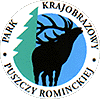
Пуща Роминская — трансграничный природный комплекс
Охраняемые территории
Ландшафтный парк Пущи Роминской был создан в 1998 году для сохранения природных и культурных ценностей и организации отдыха на специально отведённой территории. В исходном тексте указаны площадь парка 14 620 га и буферной зоны 8 500 га.
Среди наиболее ценных участков перечислены резерваты Большой Мехач, Бочки, Червона Струга, Дикий Конт и Струга Житкеймска — торфяники, островные дубравы, долины ручьёв и участки естественного сосново-елового леса.
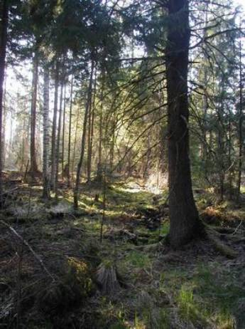
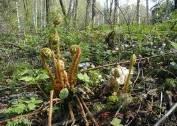
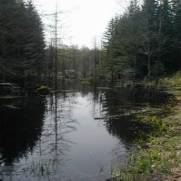
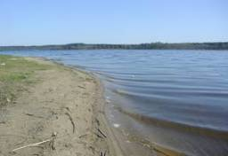
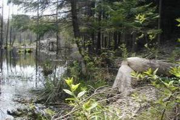
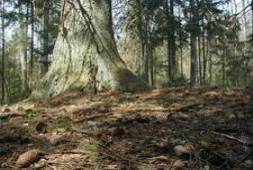
Природное разнообразие и посещение
В исходном материале отмечены благородный олень, лось, волк, бобр и рысь, а также 128 видов птиц, включая седого и белоспинного дятлов, малого подорлика, скопу, осоеда, серого журавля и чёрного аиста. Реки и озёра создают условия для разнообразных водных организмов, беспозвоночных и земноводных.
Парк и прилегающие территории привлекают посетителей в любое время года. В старом тексте упоминаются экологические тропы, памятные камни, исторические места и город Гольдап как центр отдыха и зимних видов спорта.
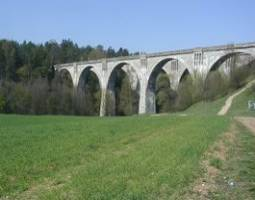
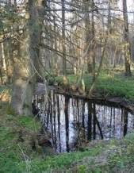
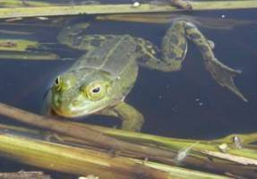
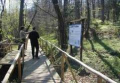
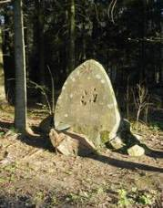
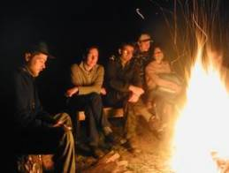
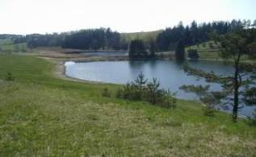
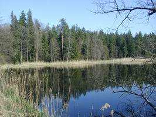

Площадь парка, перечень резерватов, сведения о видах и туристических объектах перенесены из исторического материала сайта. Перед публикацией следует проверить актуальность названий, статусов и численных данных по польским официальным источникам.